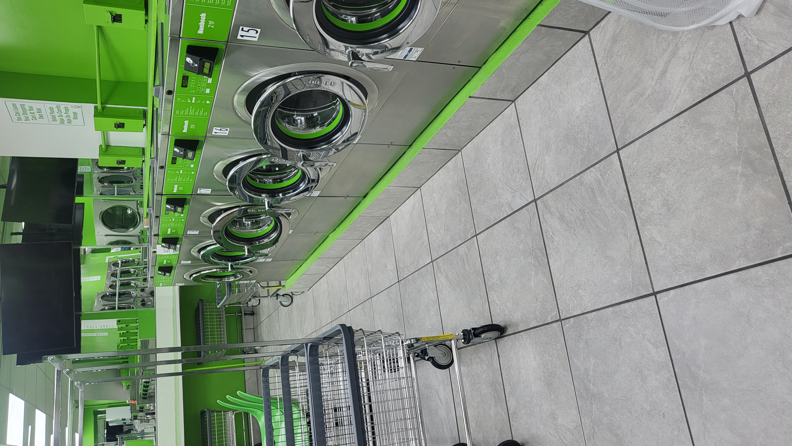
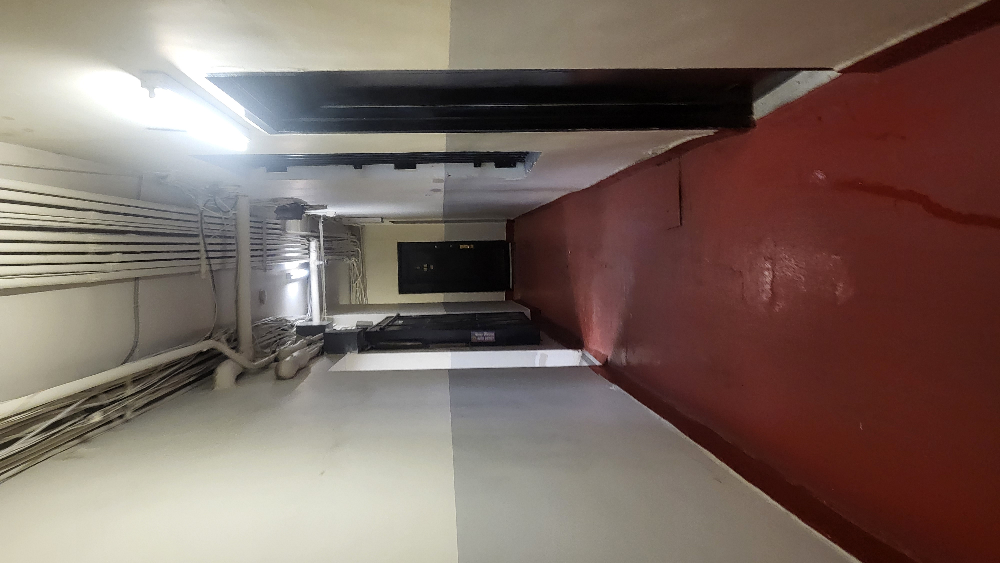
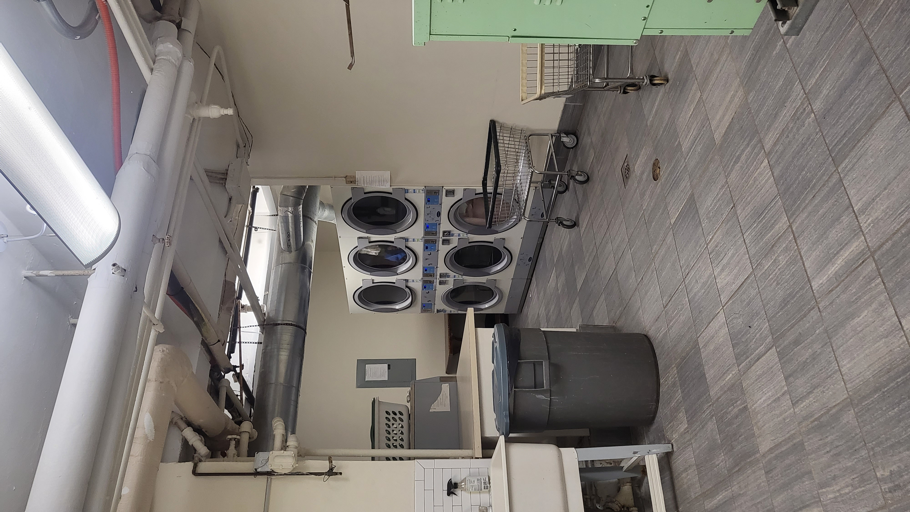
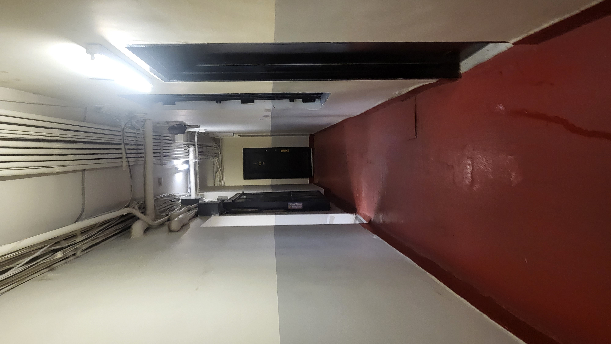
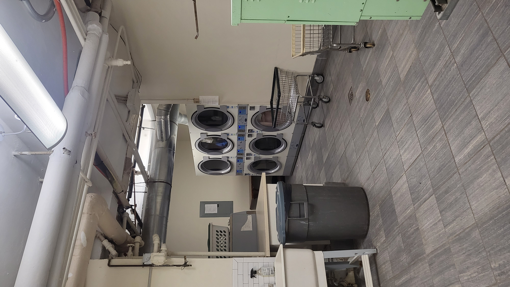

147 West 14th, New York, 10011
My Insta : @ji_su_kang / My Phone : 332-242-0201
🧺 Laundry Room
There are two ways to do laundry:(1) Use the portable laundry machine in my bathroom.
(2) Use the laundry room outside the building.- ms green bubble

This place is about 2.5 blocks away from the laundromat. It takes 2-3 min. It's a new place and clean. They use the laundromat card for payment. They also offer pickup and delivery service, which seems convenient to use.
(3) Use the laundry room outside the building. - management bilding

The laundromat is located in the basement of the apartment management building, about 1.5 blocks away from here. It takes 1-2 min. I recommend using the laundromat above this place because I think there's a risk of getting caught by the doorman. Haha (Subletting is prohibited.) Take the elevator and go down to the basement. It's in the left room in the corridor shown in the picture.This can be paid through an app or with a coin.
This place is about 2.5 blocks away from the laundromat. It takes 2-3 min. It's a new place and clean. They use the laundromat card for payment. They also offer pickup and delivery service, which seems convenient to use.
(3) Use the laundry room outside the building. - management bilding

The laundromat is located in the basement of the apartment management building, about 1.5 blocks away from here. It takes 1-2 min. I recommend using the laundromat above this place because I think there's a risk of getting caught by the doorman. Haha (Subletting is prohibited.) Take the elevator and go down to the basement. It's in the left room in the corridor shown in the picture.This can be paid through an app or with a coin.
🔑 Keys

The key for the first floor is opened by touch
If you lost key, use KEYME
This is a key duplication kiosk machine. If you ever lose your keys, you can make a duplicate key right here. You can find the location by searching "Keyme" on Google Maps. I recommend the one at the 24-hour Seven Eleven on 12th Street. The cost ranges from $7 to $25. To use the kiosk, simply press the login button and log in.ID: kangj064@newschool.edu
Password: 147w14th
However, when making a copy, an authentication code will be sent to my email, so we need to be able to communicate for the duplication to be possible.


How to open the first door:
Using the first floor key, you can open it by touching the black section.
How to open the #9 door:

How to lock the #9 door:
The door automatically locks when the iron protrudes like in the right picture.


How to open the mailbox:
Turn the key to the left.
When someone calls:
Press the right person-shaped button to have a conversation. Press the left key button to open the door to the first floor.
🗑️ How to dispose of garbage:
You can throw it away on the first floor. If it's something like a cardboard box, you can place it on top here.
How to open the window:
Turn it to the left to open and to the right to lock. Lower the upper window to open it. Also, I cleared out the right storage cabinet for you. You can put your belongings in here!